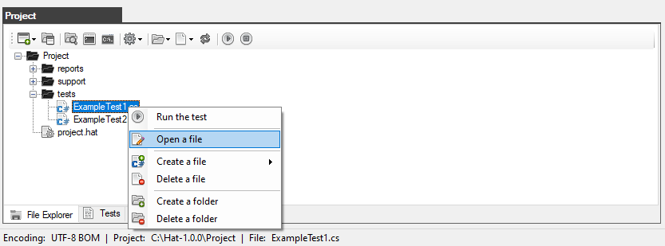
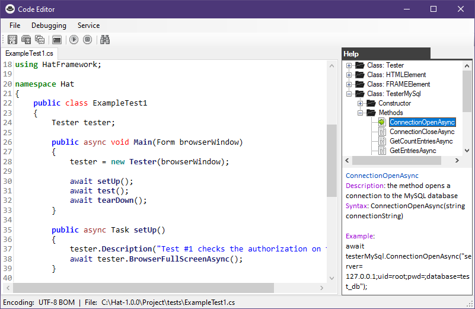
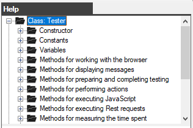
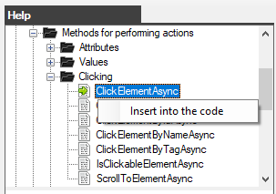
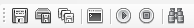
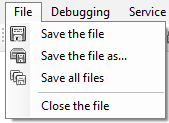
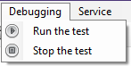
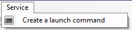
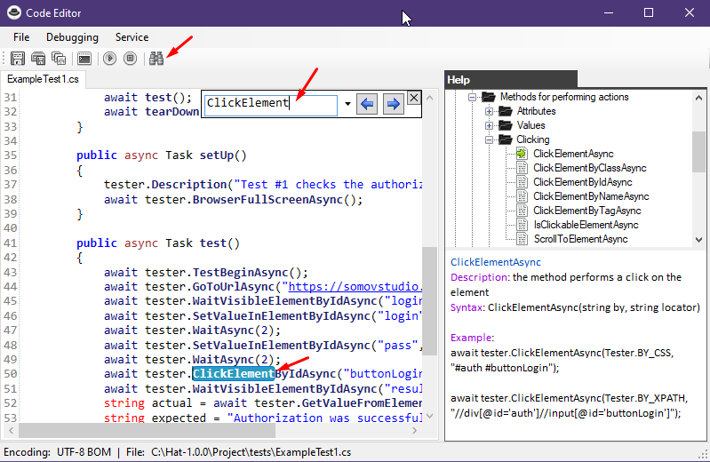
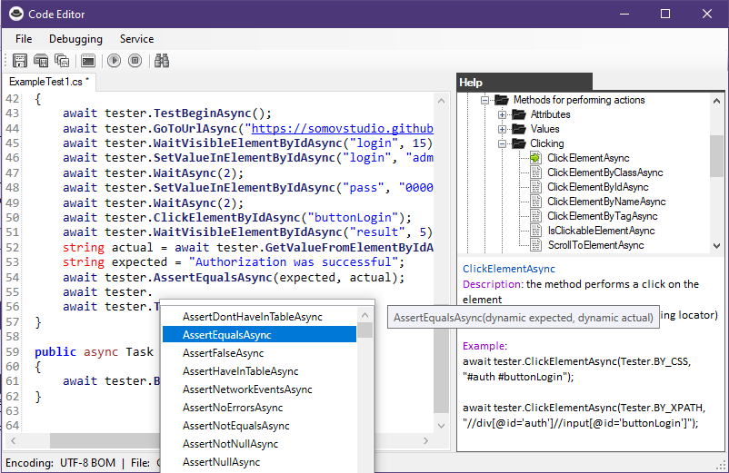

Code Editor (C#)
Autotests are edited in a special editor.
To open a file with the *.cs extension in the editor, you need to double-click on the desired file in the Project window (on the Explorer tab) or open the context menu and select "Open file".

The following editor window will open in front of you.

An editor with keyword highlighting, as well as reference information about the built-in methods of the Net Framework framework.
You do not need to manually type the names of the methods, it will be enough to click on it twice (or through the context menu item) so that the method is automatically inserted into the code.

There are buttons on the toolbar:

The main menu

File:
Debugging:
Service:
Performing a search
To open the search window, click on the search buttonor press CTRL+F.

The editor allows you to export a list of built-in methods to simplify writing code.

Created with the Personal Edition of HelpNDoc: Qt Help documentation made easy